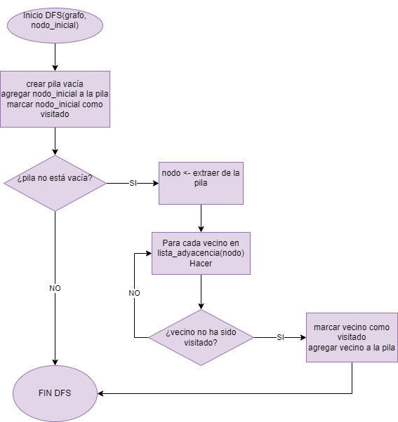

Caso de uso 1
Inicio RutaMasCortaBFS(grafo, inicio, destino)
cola = nueva Cola()
visitados = nuevo Conjunto()
padres = nuevo Diccionario() // Para reconstruir la ruta
cola.encolar(inicio)
visitados.agregar(inicio)
Mientras cola no esté vacía Hacer
actual = cola.desencolar()
Si actual == destino Entonces
Retornar reconstruirRuta(padres, inicio, destino)
FinSi
Para cada vecino en grafo.vecinos(actual) Hacer
Si vecino no está en visitados Entonces
visitados.agregar(vecino)
padres[vecino] = actual
cola.encolar(vecino)
FinSi
FinPara
FinMientras
Retornar "No hay ruta"
Fin
reconstruirRuta(padres, inicio, destino)
ruta = nueva Lista()
actual = destino
Mientras actual no sea nulo Hacer
ruta.agregar(actual)
actual = padres[actual]
FinMientras
Invertir ruta
Retornar ruta
Fin
Diagrama Caso de uso 1

Caso de uso 2
Inicio ComponentesConectados(grafo)
visitados = nuevo Conjunto()
componentes = nueva Lista()
Para cada nodo en grafo.nodos Hacer
Si nodo no está en visitados Entonces
componente = nueva Lista()
DFS(grafo, nodo, visitados, componente)
componentes.agregar(componente)
FinSi
FinPara
Retornar componentes
Fin
DFS(grafo, nodo, visitados, componente)
visitados.agregar(nodo)
componente.agregar(nodo)
Para cada vecino en grafo.vecinos(nodo) Hacer
Si vecino no está en visitados Entonces
DFS(grafo, vecino, visitados, componente)
FinSi
FinPara
Fin
Diagrama Caso de uso 2

Caso de uso 3
Inicio DetectarCiclos(grafo)
visitados = nuevo Conjunto()
enPila = nuevo Conjunto()
Para cada nodo en grafo.nodos Hacer
Si nodo no está en visitados Entonces
Si DFS_Ciclo(grafo, nodo, visitados, enPila) Entonces
Retornar "Ciclo detectado"
FinSi
FinSi
FinPara
Retornar "No hay ciclos"
Fin
DFS_Ciclo(grafo, nodo, visitados, enPila)
visitados.agregar(nodo)
enPila.agregar(nodo)
Para cada vecino en grafo.vecinos(nodo) Hacer
Si vecino no está en visitados Entonces
Si DFS_Ciclo(grafo, vecino, visitados, enPila) Entonces
Retornar Verdadero
FinSi
Sino Si vecino está en enPila Entonces
Retornar Verdadero // Ciclo detectado
FinSi
FinPara
enPila.eliminar(nodo)
Retornar Falso
Fin
Diagrama Caso de uso 3
Caso de uso 4
Inicio RecomendarAmigos(grafo, usuario)
amigos = grafo.vecinos(usuario) // Amigos directos
candidatos = nuevo Diccionario() // clave: persona, valor: amigos en común
Para cada amigo en amigos Hacer
Para cada amigoDeAmigo en grafo.vecinos(amigo) Hacer
Si amigoDeAmigo no es usuario Y no está en amigos Entonces
Si amigoDeAmigo no está en candidatos Entonces
candidatos[amigoDeAmigo] = 1
Sino
candidatos[amigoDeAmigo] = candidatos[amigoDeAmigo] + 1
FinSi
FinSi
FinPara
FinPara
Ordenar candidatos por valor descendente // Más amigos en común primero
Retornar candidatos
Fin
Diagrama Caso de uso 4
Caso de uso 5
Inicio Dijkstra(grafo, inicio)
distancias = nuevo Diccionario() // clave: nodo, valor: distancia
visitados = nuevo Conjunto()
padres = nuevo Diccionario() // Para reconstruir rutas
colaPrioridad = nueva ColaPrioridad() // Ordenada por distancia
Para cada nodo en grafo.nodos Hacer
distancias[nodo] = Infinito
FinPara
distancias[inicio] = 0
colaPrioridad.insertar(inicio, 0)
Mientras colaPrioridad no esté vacía Hacer
actual = colaPrioridad.extraerMinimo()
Si actual no está en visitados Entonces
visitados.agregar(actual)
Para cada vecino en grafo.vecinos(actual) Hacer
distanciaNueva = distancias[actual] + grafo.peso(actual, vecino)
Si distanciaNueva < distancias[vecino] Entonces
distancias[vecino] = distanciaNueva
padres[vecino] = actual
colaPrioridad.insertar(vecino, distanciaNueva)
FinSi
FinPara
FinSi
FinMientras
Retornar distancias, padres
Fin
Diagrama Caso de uso 5